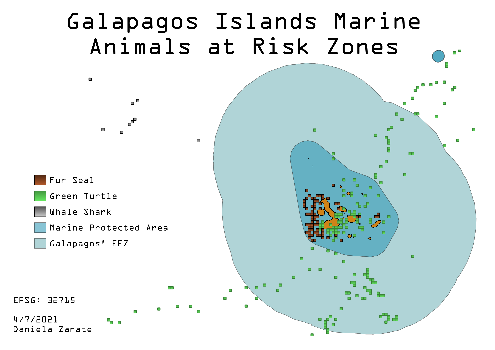

Homework 10: Geoprocessing Analysis
Galapagos Islands marine animals that are not in protected zones
The Galapagos Islands is one of the world's most protected areas because of the uniqueness of its species. The surrounding marine reserve has een called 'a unique living museum and showcase of evolution' according to UNESCO. Even though these areas are protected, animal migration is innevitable and not all migration paths are protected. The map below shows the location of three species from the Galapagos and the places where they might be at risk. For this map I created a buffer around the island to show the EEZ and then dissolved them to show as a unique layer.

Data used for this project